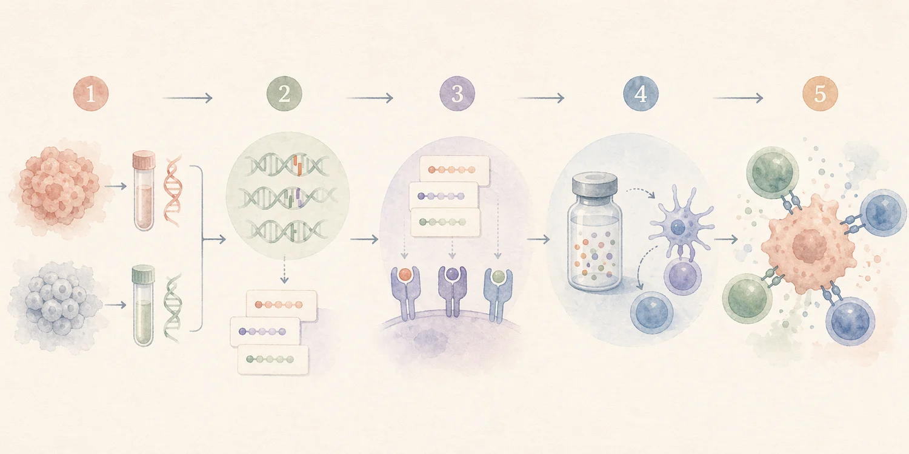

Vorasidenib
My tumor has IDH1 R132C. Vorasidenib is FDA-approved for grade 2 astrocytoma or oligodendroglioma with a susceptible IDH1 or IDH2 mutation after surgery. It is the IDH inhibitor I am on now.
It is an IDH-mutant astrocytoma. The mutations that define it are IDH1, ATRX, and TP53. A peptide pipeline took 314,801 candidates down to 18. Where a number came from, I say so.
This is my treatment story, not proof that the vaccine, or the combination, improves outcomes.
My tumor has IDH1 R132C. Vorasidenib is FDA-approved for grade 2 astrocytoma or oligodendroglioma with a susceptible IDH1 or IDH2 mutation after surgery. It is the IDH inhibitor I am on now.
The vaccine is built from my tumor's own mutations, so it only exists for me. It's made of peptides that cross the mutated spots, the idea being to point my T cells at fragments of protein that shouldn't be in a healthy body. Nobody knows yet whether it helps, or whether pairing it with the IDH drug helps.
Evidence reviewed .
Some come straight off my medical reports. Others are first-pass counts from code I wrote, not clinical conclusions. I've marked which is which.
I worked with a pipeline that narrows the mutations in my tumor down to the peptides most likely to be visible to my immune system.

Find mutations that are present in the cancer and different from normal tissue.
Look for mutation-spanning peptides that could be shown by my HLA molecules.
Use selected peptides as patient-specific vaccine material. CeGAT's vaccine is personalized: the input is my tumor's molecular profile.
The goal is for immune cells to recognize selected pieces of the tumor.
Pulled from my Tempus, BostonGene, and pathology reports. Pick one to see what it means and how confident I am about it.
If this story makes you want to help, these are established places to support brain tumor research: American Brain Tumor Association, National Brain Tumor Society, UCSF Brain Tumor Center, Ivy Brain Tumor Center, Glioblastoma Foundation, Sontag Foundation.